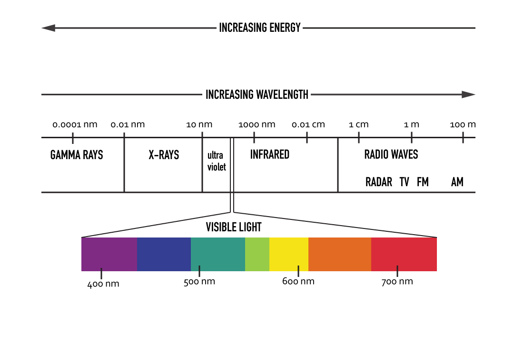

Speed of
light
In 1676 Danish astronomer, Ole Roemer, became the first person to measure the speed of light. He did this by observing the shadows of jupiters moons. Other scientists assumed that the speed of light was either too fast to measure or infinite until this method was brought about.
As you can see from the image, higher energy levels are associated with waves that are closer together. Similarly, different wavelengths are paired with the colors they illuminate (give off/make).
